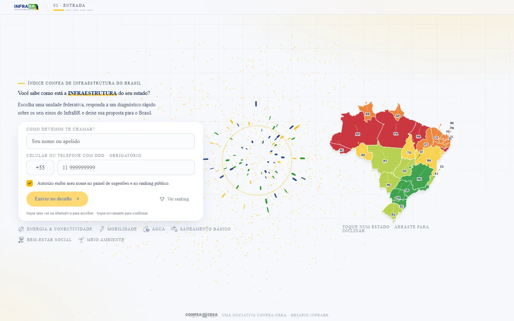
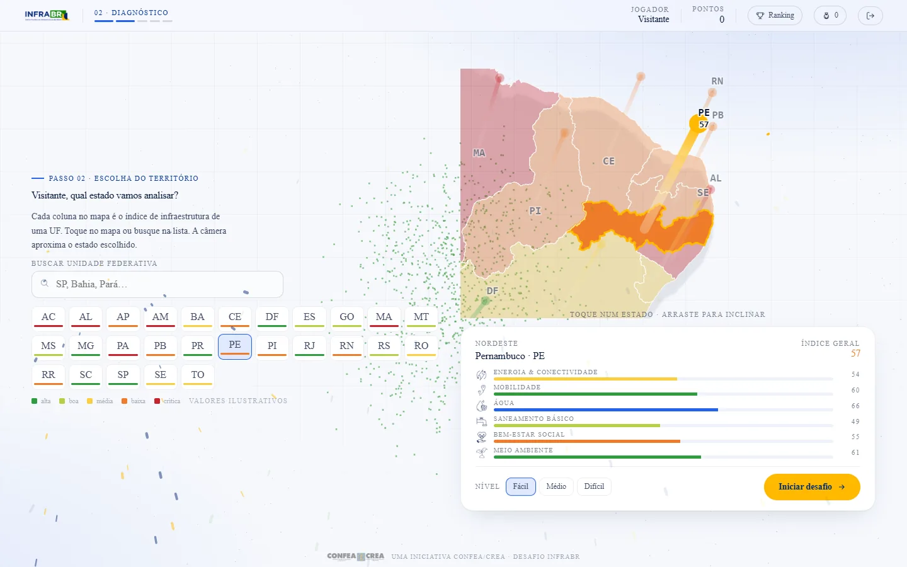
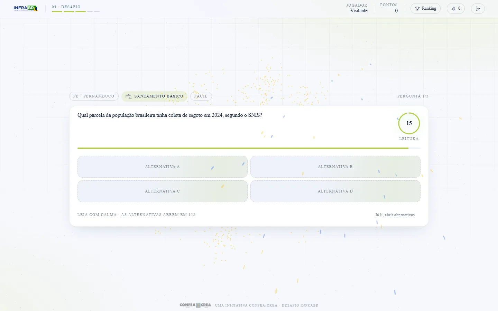
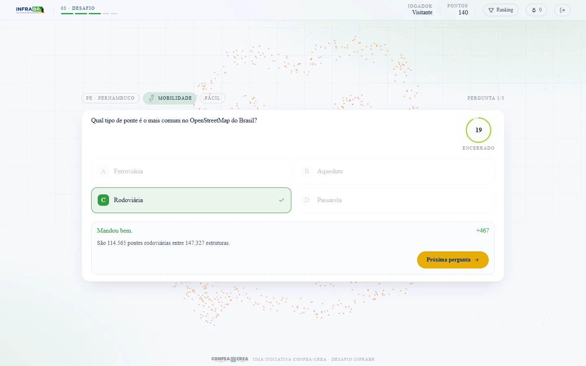
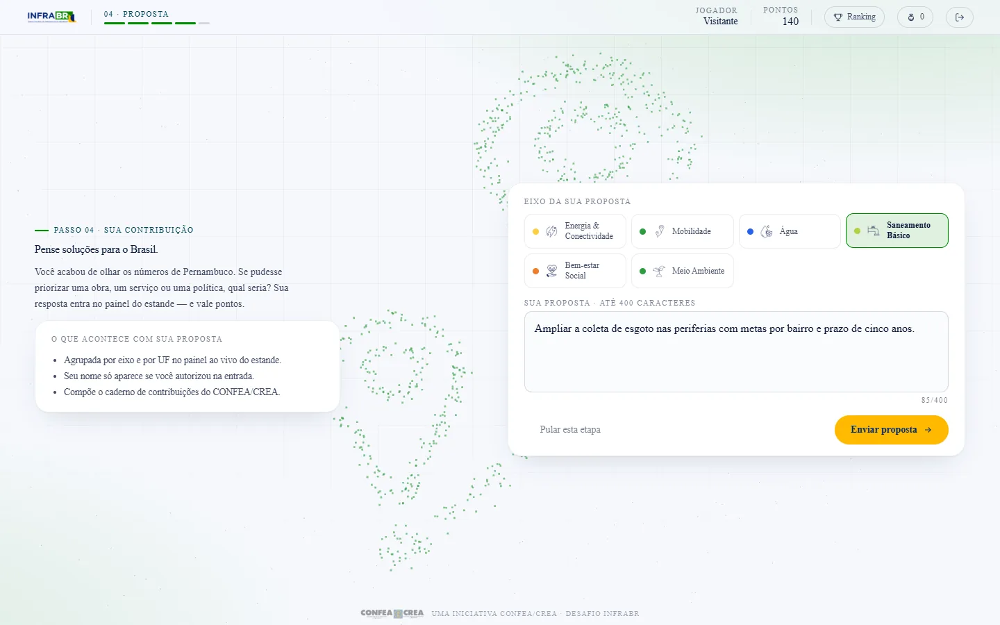
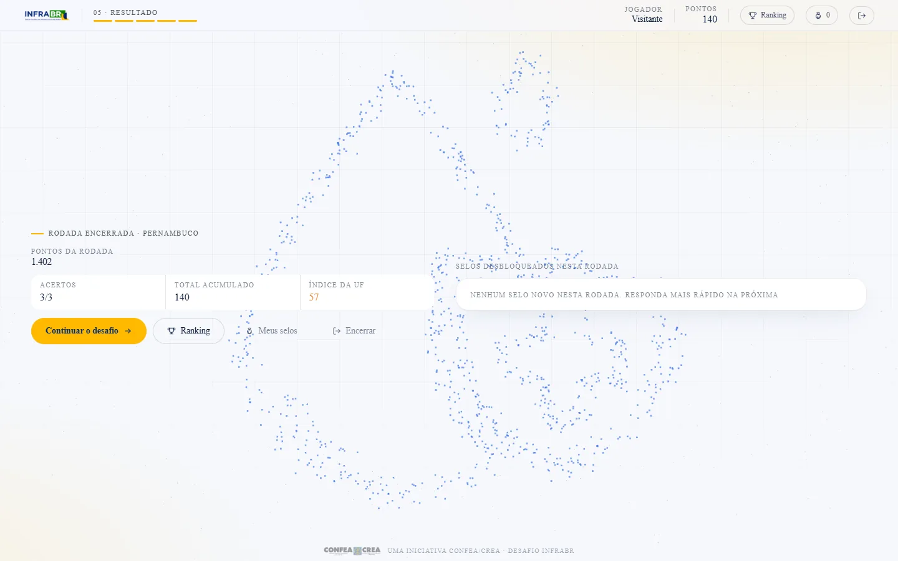
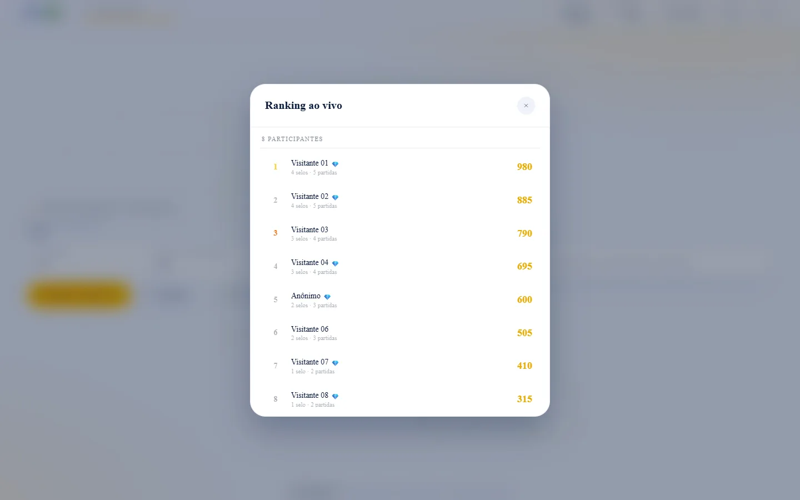
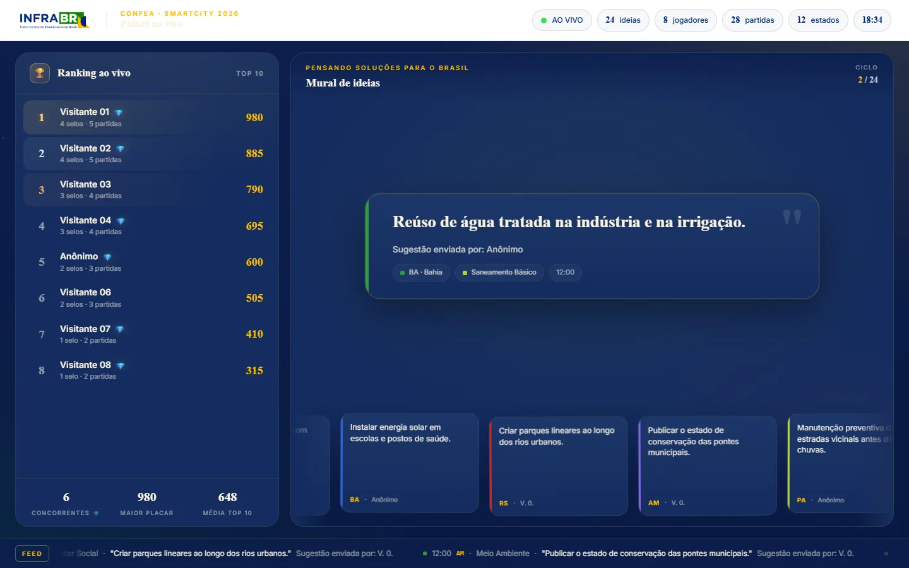
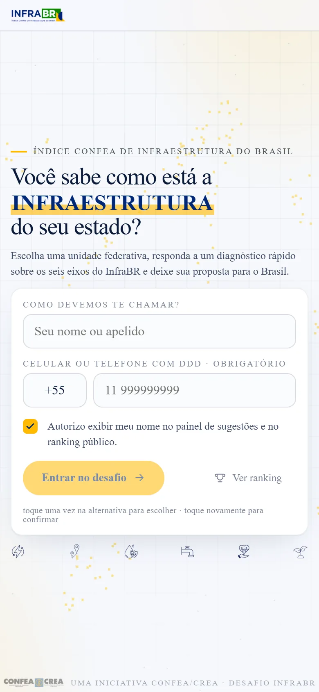
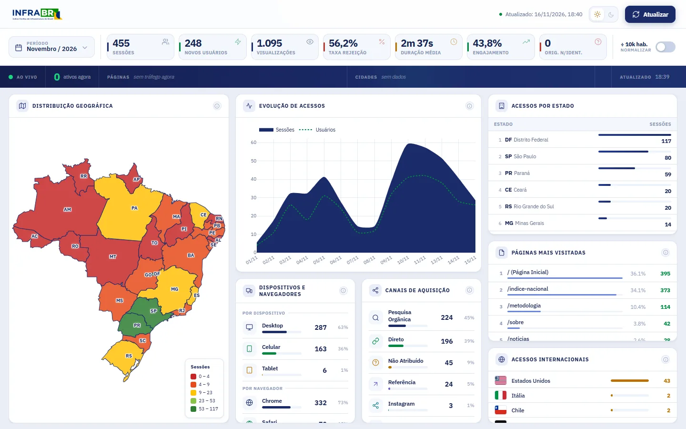

PortfólioTerritório e infraestrutura
Índice de Infraestrutura do Brasil (InfraBR)
Frentes de trabalho do InfraBR, o índice de infraestrutura do CONFEA: mapeamento das bases do Sistema CONFEA/CREA, tabelas de ponderação, painel de acessos do site e o Desafio InfraBR, jogo de perguntas usado em eventos.
- Instituição
- CONFEA
- Eixos
- energia, mobilidade, água, saneamento, bem-estar e meio ambiente
- Eventos
- ENIC 2026 e SmartCity 2026
- Saída
- 3 páginas do jogo, painel de acessos e planilhas
Desafio InfraBR
Capturas das páginas geradas, com o banco simulado. Perguntas, jogadores e propostas são fictícios. Os índices do mapa são ilustrativos.
















No celular


Fluxo do jogo
Uma pergunta nunca aparece 3 vezes para o mesmo jogador. As alternativas são embaralhadas a cada rodada.
Arquitetura
Pontuação
Multiplicador por nível
Acerto vale 100 pontos mais 1 ponto a cada 50 ms que sobram dos 20 s. O total é multiplicado pelo nível.
Painel de acessos
Dados agregados do Google Analytics 4, lidos por Apps Script. Atualização ao abrir e a cada 60 segundos.


Outras frentes
- Mapeamento de basesScript que lista esquemas, tabelas e colunas de 4 bases do Sistema CONFEA/CREA: profissionais, passagens e diárias, registro único e ARTs.
- PonderaçãoPeso por classe de indicador: A 1,8828%, B 1,4644%, C 1,0460% e D 0,6276%. A planilha soma os pesos por eixo e componente.
- Tabelas de metodologiaConversão de 84 indicadores de redes em planilha, com uma aba por indicador e a tabela consolidada.
- Versão SmartCityO mesmo gerador, com a marca CONFEA SmartCity 2026, serviu ao jogo Cidades Inteligentes.
Administração
- PerguntasCadastro por UF, eixo e nível, com 4 alternativas e explicação.
- Selos16 selos pré-cadastrados, com 7 tipos de critério: acertos por eixo, acertos por região, todas as regiões, propostas, partidas, velocidade e pontos.
- ModeraçãoExclusão de propostas e de jogadores, com atualização imediata no painel.